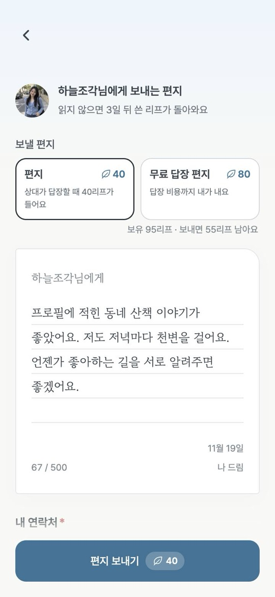
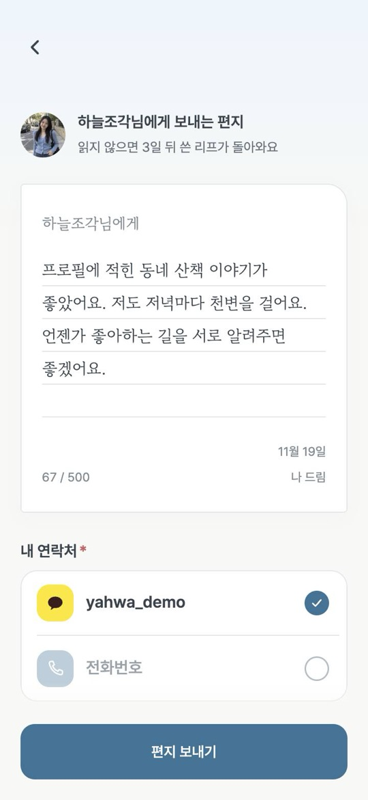
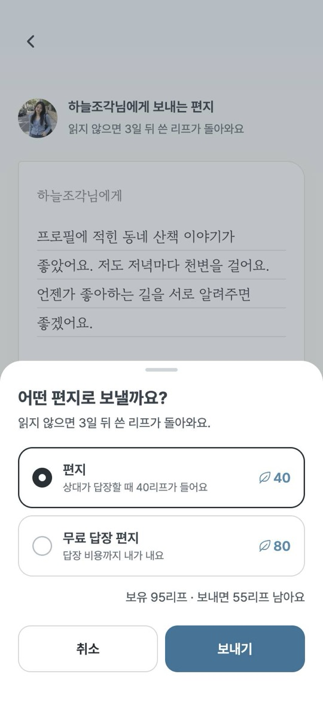
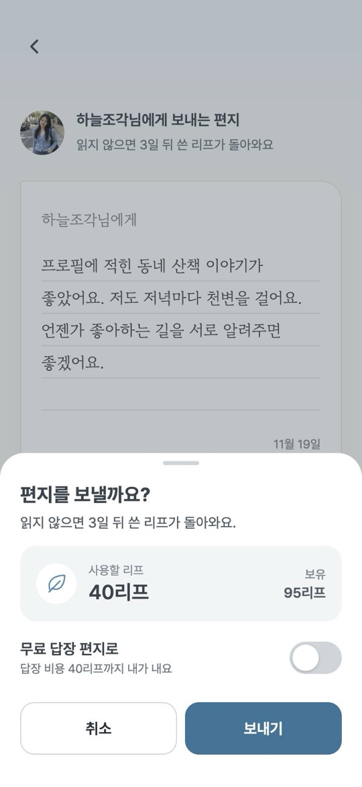
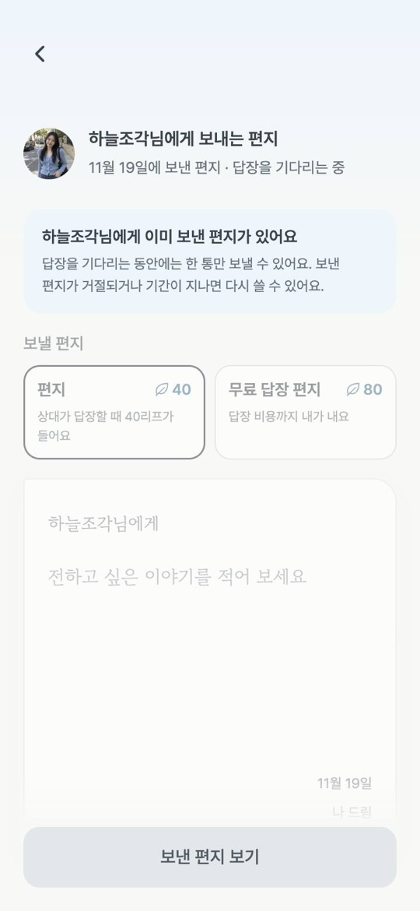
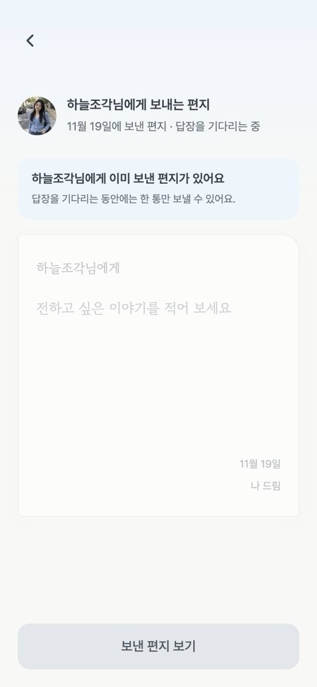

편지 쓰기 · 가격은 보낼 때 (팀 피드백 6)
- 받은 피드백 1: 이미 보낸 편지가 있을 때 "거절되거나 기간이 지나면 다시 쓸 수 있어요"는 빼요. 거절되면 편지는 아예 지워져요.
- 받은 피드백 2: 위에 "편지 40 · 무료 답장 편지 80"이 먼저 있으면 쓰기 전에 가격부터 읽혀요. 다 쓰고 "편지 보내기"를 누르면 아래에서 중간까지 올라오는 시트로 가격을 안내해요.
- 바뀐 화면: 위 종류 카드 · 보유 리프 줄을 빼고, 버튼의 리프 꼬리표도 빼서 "편지 보내기"만. 편지지가 화면 맨 위로 올라와요.
- 시트는 두 안: 누르면 고른 종류 · 보유 리프를 보여주고 "보내기"를 누르면 지금처럼 편지가 날아가요. 리프가 모자라면 "리프 충전하기"로 바뀌어요.
편지 쓸 때

지금위에 종류 카드(40 · 80) + 보유 리프, 버튼에 리프 40

바뀐 화면편지지 · 내 연락처 · "편지 보내기"만. 가격은 아직 안 보여요
"편지 보내기"를 누르면

A종류 두 줄에서 고르기 · "어떤 편지로 보낼까요?" 편지 40 · 무료 답장 편지 80, 아래 보유 · 남는 리프

B가격 상자 + 스위치 · 답장 쓰기 확인 창과 같은 리프 상자. "무료 답장 편지로"를 켜면 80리프로 바뀌어요
이미 보낸 편지가 있을 때

지금"…거절되거나 기간이 지나면 다시 쓸 수 있어요" + 흐린 종류 카드

바뀐 안"답장을 기다리는 동안에는 한 통만 보낼 수 있어요."만 남기고 종류 카드도 빠져요